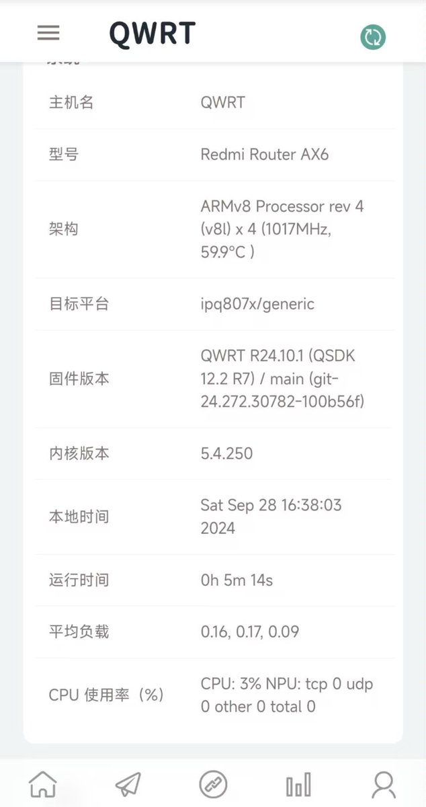
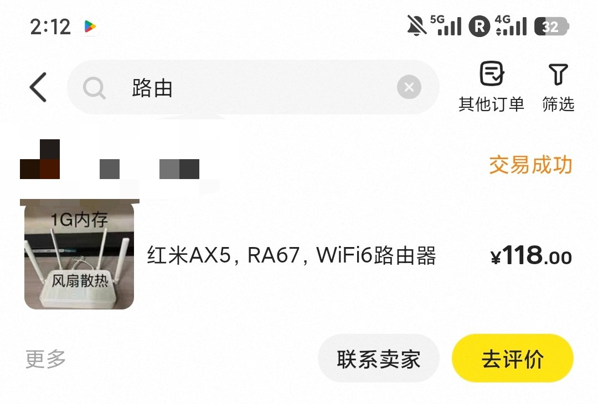

奶昔🥤
@realNyarime
在用x86软路由之前，买的是红米AX6以及它的上一代AX5，都是WiFi6并刷了OpenWrt
闲鱼卖家给扩了1G内存，整机不用120块钱内置OpenClash、PassWall2等翻墙插件，包括AdGuardHome这些样样齐全
除了高通IPQ闭源驱动QSDK内核版本是5.4以外，TruboACC这些硬件加速都能开，倒是不会有小包转发抽风的问题


姜子牙疼｜AI数码垃圾佬
@qiqiqi87950427
@realNyarime 有没有给垃圾佬推荐的